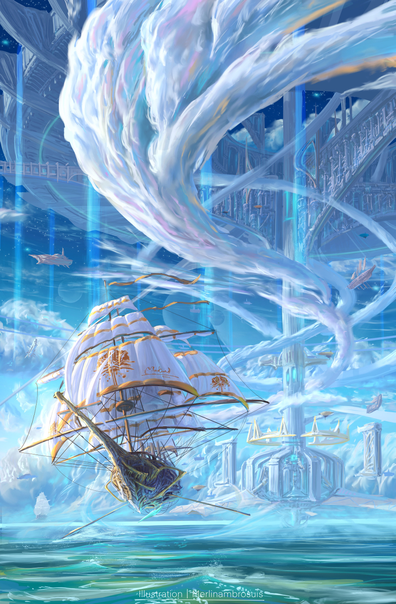

Welcome to the Hakurei Shrine
Home of Touhou Project's protagonist, Reimu Hakurei. The shrine
and its maiden serves to protect the land of Gensōkyō from the
outside world by maintaining the Great Hakurei Barrier and
exterminating yōkai. Donations are greatly appreciated!

Information!

This is a type of plant. We love this one.

This is another type of plant. Isn't it nice?

We have so many plants. Yay plants.

I'm running out of things to say about plants.
"My god, jelly donuts are so scary."
-Fujiwara no Mokou